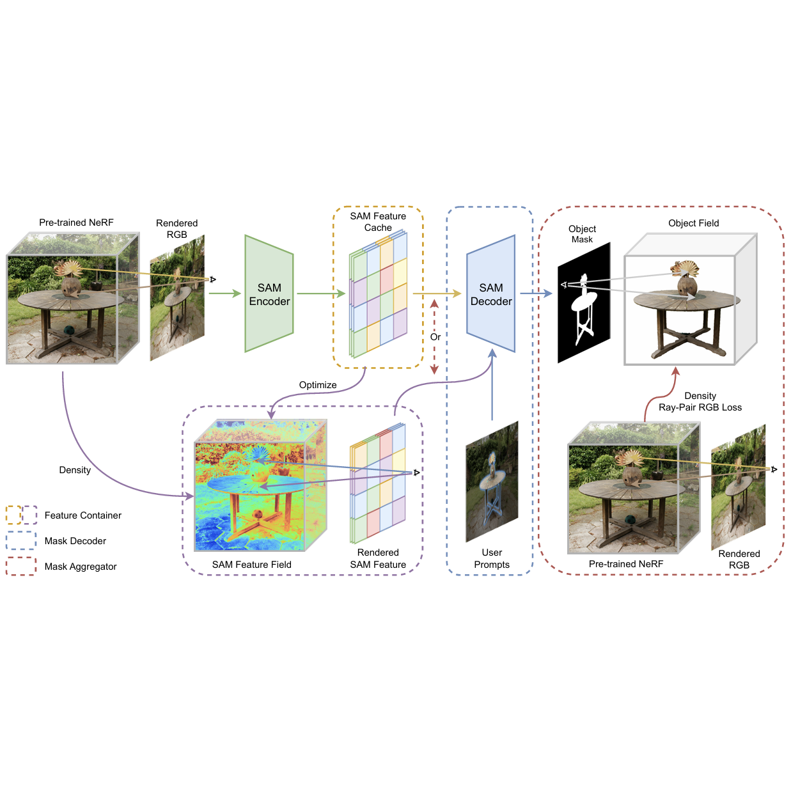
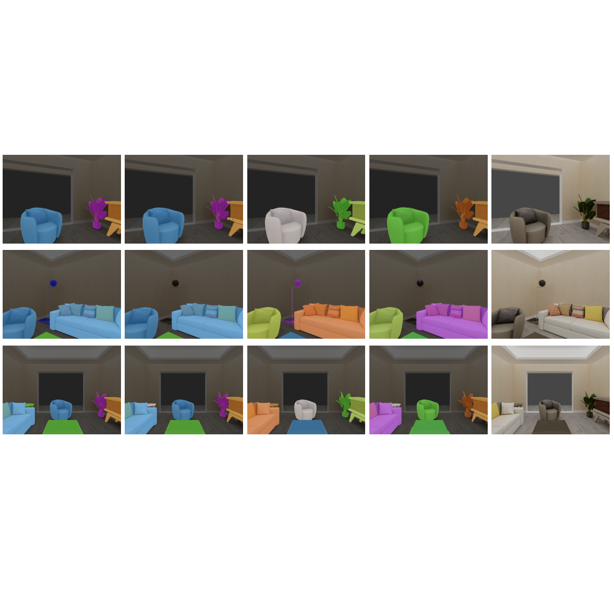
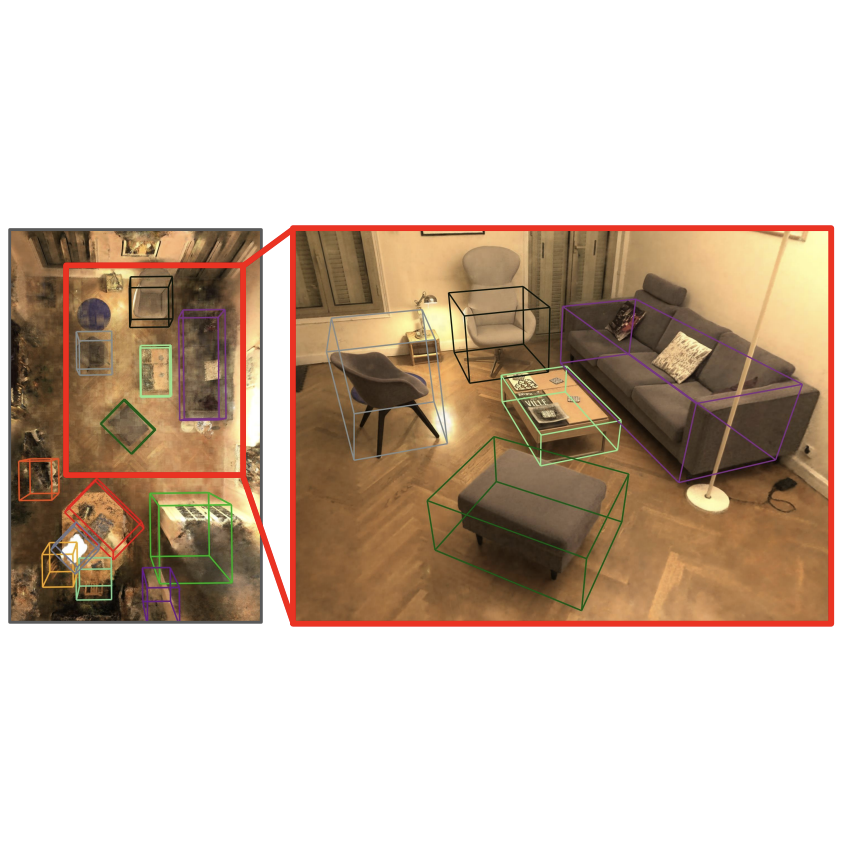

Research
I'm interested in 3D vision, differentiable rendering, real-time rendering, generative AI, as well as other computer vision and graphics fields.
My past research is mainly on empowering radiance fields and other 3D representations with the capability of scene understanding. I also work on
uncertainty quantification in differentiable rendering, and accelerating rendering with temporal reprojection.
|
|

|
SANeRF-HQ: Segment Anything for NeRF in High Quality
Yichen Liu,
Benran Hu,
Chi-Keung Tang,
Yu-Wing Tai
CVPR, 2024
project page
/
arXiv
Fusing multi-view SAM segmentation masks as an object field improves the performance of zero-shot 3D segmentation in NeRF.
|
|

|
Instance Neural Radiance Field
Yichen Liu*,
Benran Hu*,
Junkai Huang*,
Yu-Wing Tai,
Chi-Keung Tang
ICCV, 2023
GitHub
/
arXiv
3D instance segmentation in NeRF by matching multi-view instance masks with sparse 3D masks produced by a 3D Mask R-CNN.
|
|

|
NeRF-RPN: A general framework for object detection in NeRFs
Benran Hu*,
Junkai Huang*,
Yichen Liu*,
Yu-Wing Tai,
Chi-Keung Tang
CVPR, 2023
GitHub
/
arXiv
We introduce 3D object detection to NeRF by sampling feature grids from radiance fields and applying a 3D detector on them.
|
This is another website using Jon Barron's template.
|
|
{kind=link}